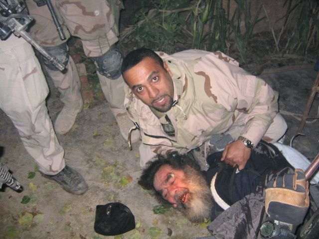
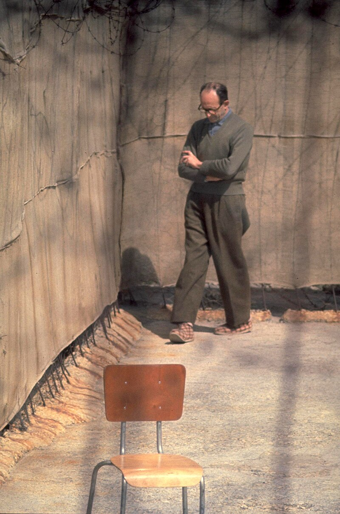
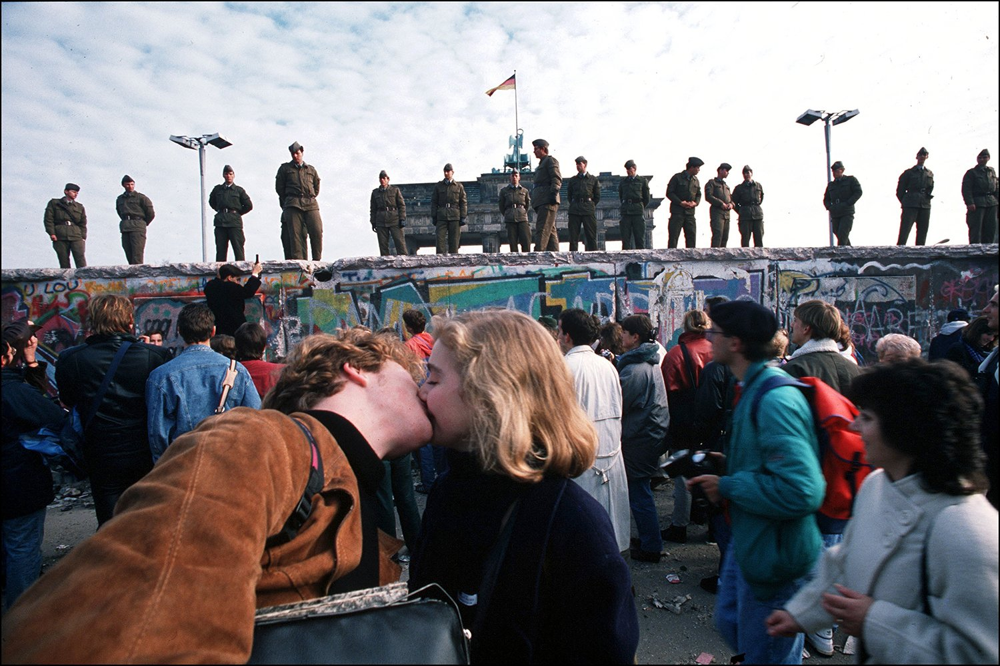

Πολιτικά
Bombacci, Mussolini, Petacci, Pavolini and Starace are hanged upside-down at a gas station, 29 April 1945
Josef Mengele's skull is examined at Universidade de São Paulo, 1986

Saddam Hussein is captured, 13 December, 2003

Adolf Eichmann walks in the yard of Ayalon Prison, 1961Muammar Gaddafi begs for his life as he's captured, 20 October 2011

A couple kisses during the Berlin Wall fall, 9 November, 1989Reaction to Donald Trump's arrival at the Réouverture de Notre-Dame, 7 December 2024
Student refuses to shake slovak president Peter Pellegrini's hand, 13 January 2025
Yellow-and-blue monument in Pokrovsk was destroyed by a ruzzian attack, 2 January 2025
Free Syria news network blurred german foreign minister Annalena Berbok along with two interprets because they're woman, 3 January 2025
The Soviet flag is lowered by the last time, 1991